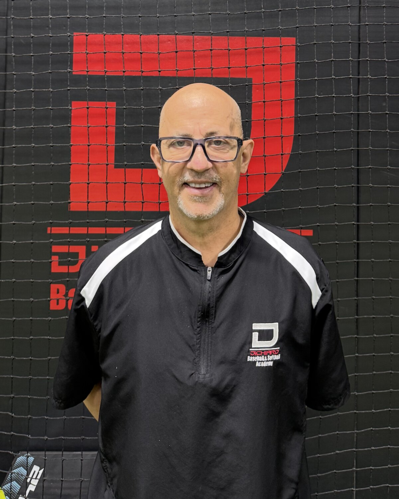

Three Major League draft picks on staff, all still teaching on the floor.
3
MLB draft picks
Since 2000
Teaching in Fair Lawn
Teaches
Showing 7

dbsa-10-portrait-lou-dichiaro · Head and shoulders, net behind
Lou DiChiaro
Founder and head instructor
Hitting · Fielding · Baseball · Softball
Drafted 19th round, 1983, Baltimore Orioles
Seton Hall captain, 1983. Cape Cod League, batted .321
Coaching and instructing since 2000
Lou DiChiaro
Founder and head instructor · Hitting · Fielding · Baseball · Softball
Playing career
Seton Hall University, 1980 to 1983. Four-year scholarship player and starter, captain in 1983. Tenth all-time in career walks with 112 and seventh in stolen bases with 86.
Cape Cod League, 1982. Yarmouth Dennis Red Sox, batted .321.
Drafted in the 19th round of the 1983 draft by the Baltimore Orioles. Played Single A with the Newark Orioles.
New Dorp High School, 1977 to 1979. 1979 New York City champions, All City Team, Staten Island Advance All-Star.
Coaching
Don Bosco Prep, assistant varsity coach, 2008 to 2013. 2008 national high school champions.
Old Tappan, assistant varsity coach, 2021 to present.
At the academy
Founder and head instructor since 2000. Teaches hitting and fielding for both baseball and softball players.
dbsa-11-portrait-fran-fitzgerald · Head and shoulders, net behind
Fran Fitzgerald
Professional instructor
Hitting · Catching · Baseball · Softball
Drafted 1982, Baltimore Orioles. Minor League All-Star
Baseball America Top Ten Catching Prospect
Bergen County and Chowan Athletic Hall of Fame
Fran Fitzgerald
Professional instructor · Hitting · Catching · Baseball · Softball
Playing career
Drafted in 1982 by the Baltimore Orioles. Rookie League champions, elected Minor League All-Star, named a Baseball America Top Ten Catching Prospect, Fall Instructional League 1982 and 1983.
East Carolina University, 1980 to 1982. Led ECU to the ECAC South 1 championship and was team leader at .384.
Chowan University, 1978 to 1980. All District 4, .402 career batting average.
Fair Lawn High School, 1976 to 1978. All League and All Bergen County.
Honors
Bergen County Hall of Fame, 1998. Chowan Athletic Hall of Fame, 2012.
Semi-pro league MVP, four-time All-Star, 25th Anniversary All-Met Team, 1999 Over 30 New Jersey Player of the Year.
At the academy
More than twenty years instructing. Teaches hitting and catching for both baseball and softball players.
dbsa-15-portrait-scott-fischer · Head and shoulders, net behind
Scott Fischer
Professional instructor
Hitting · Fielding · Baseball · Softball
Four-year varsity starter, Pascack Hills
All League and All Bergen County, 2005 and 2006
William Paterson College, Toms River Black Sox
Scott Fischer
Professional instructor · Hitting · Fielding · Baseball · Softball
Playing career
William Paterson College, 2007 to 2008, under coach Jeff Albies. ACBBL Toms River Black Sox, 2007 to 2008.
Pascack Hills High School, 2003 to 2006. Four-year varsity starter, All League and All Bergen County in 2005 and 2006, Team Top Offensive Player Award and Coaches Award.
Coaching
Pascack Hills High School, assistant varsity coach, 2009 to 2010.
At the academy
Teaches hitting and fielding for both baseball and softball players.
dbsa-12-portrait-eric-pfisterer · Head and shoulders, net behind
Eric Pfisterer
Professional instructor
Pitching · Baseball
Drafted 15th round, 2008, Cincinnati Reds
Atlanta Braves farm system. Duke scholarship
Cape Cod All-Star who pitched at Fenway Park
Eric Pfisterer
Professional instructor · Pitching · Baseball
Playing career
Played professionally in the Atlanta Braves farm system.
Cape Cod League, Wareham Gatemen, 2009 to 2010. Six and three over 98 innings with 89 strikeouts and a 3.14 ERA. Selected to the 2009 All-Star game and pitched at Fenway Park.
Duke University. Four-year baseball scholarship, ACC All-Academic Baseball Team for pitching, ACC Academic Honor Roll.
Don Bosco Prep, 2008 33-0 national championship team. Batted .525 with four home runs and 48 RBI, pitched 10-0 with a 1.60 ERA and 90 strikeouts. ESPN First Team All-American, First Team All-State, First Team All-County, Player of the Year for North Jersey. Drafted in the 15th round of the 2008 MLB draft by the Cincinnati Reds.
This page matches the current dichiarobaseball.com staff list exactly, which is
seven names. Two consequences worth a conversation. Gianna Sarlo is on the live
site but the academy has not supplied a bio sheet, so her card is built and empty
rather than filled with something invented, and she carries no discipline so she
appears only under All seven. Diana Schraer and Sam Keating have full bio sheets
and appear on the Lessons page as the softball pitching instructors, but are not
on the live staff list, so they are not here. If they are on staff, adding them
also gets back a third Hall of Fame induction and two dedicated softball pitching
specialists, which nothing on the current site mentions.
Separately, a count in a headline goes stale the moment the roster changes.
Recommend dropping the number once the roster is settled.